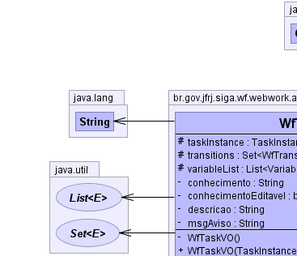
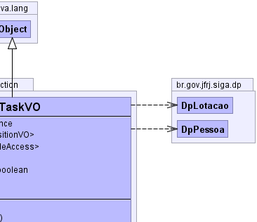
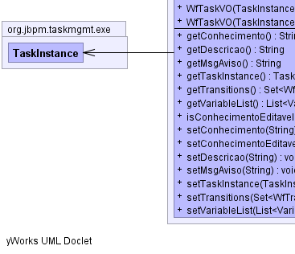
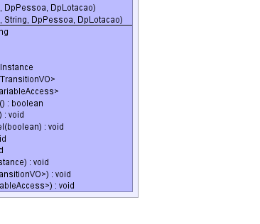

br.gov.jfrj.siga.wf.webwork.action.WfTaskVO
br.gov.jfrj.siga.wf.webwork.action.WfTaskVO
|
|||||||||
| PREV CLASS NEXT CLASS | FRAMES NO FRAMES | ||||||||
| SUMMARY: NESTED | FIELD | CONSTR | METHOD | DETAIL: FIELD | CONSTR | METHOD | ||||||||
java.lang.Object
public class WfTaskVO
Classe que repesenta um View Object (Objeto Visão, ou seja, objeto que será usado na exibição da interface do usuário) de uma tarefa.
|  |  |
|  |  |
| Field Summary | |
|---|---|
private java.lang.String |
conhecimento
|
private boolean |
conhecimentoEditavel
|
private java.lang.String |
descricao
|
private java.lang.String |
msgAviso
|
protected org.jbpm.taskmgmt.exe.TaskInstance |
taskInstance
|
protected java.util.Set<WfTransitionVO> |
transitions
|
protected java.util.List<org.jbpm.context.def.VariableAccess> |
variableList
|
| Constructor Summary | |
|---|---|
private |
WfTaskVO()
Construtor privado, impedindo a instanciação sem informar a tarefa. |
|
WfTaskVO(org.jbpm.taskmgmt.exe.TaskInstance taskInstance)
Contrutor padrão (default) |
|
WfTaskVO(org.jbpm.taskmgmt.exe.TaskInstance taskInstance,
DpPessoa titular,
DpLotacao lotaTitular)
|
|
WfTaskVO(org.jbpm.taskmgmt.exe.TaskInstance taskInstance,
java.lang.String siglaDoc,
DpPessoa titular,
DpLotacao lotaTitular)
|
| Method Summary | |
|---|---|
java.lang.String |
getConhecimento()
|
java.lang.String |
getDescricao()
Retorna a descrição da tarefa. |
java.lang.String |
getMsgAviso()
|
org.jbpm.taskmgmt.exe.TaskInstance |
getTaskInstance()
Retorna o objeto TaskInstance. |
java.util.Set<WfTransitionVO> |
getTransitions()
Retorna as transições. |
java.util.List<org.jbpm.context.def.VariableAccess> |
getVariableList()
Retorna a lista de variáveis. |
boolean |
isConhecimentoEditavel()
|
void |
setConhecimento(java.lang.String conhecimento)
|
void |
setConhecimentoEditavel(boolean conhecimentoEditavel)
|
void |
setDescricao(java.lang.String descricao)
|
void |
setMsgAviso(java.lang.String msgAviso)
|
void |
setTaskInstance(org.jbpm.taskmgmt.exe.TaskInstance taskInstance)
Define o objeto TaskInstance. |
void |
setTransitions(java.util.Set<WfTransitionVO> transitions)
Define as transições. |
void |
setVariableList(java.util.List<org.jbpm.context.def.VariableAccess> variables)
Define a lista de variáveis. |
| Methods inherited from class java.lang.Object |
|---|
clone, equals, finalize, getClass, hashCode, notify, notifyAll, toString, wait, wait, wait |
| Field Detail |
|---|
protected org.jbpm.taskmgmt.exe.TaskInstance taskInstance
protected java.util.List<org.jbpm.context.def.VariableAccess> variableList
protected java.util.Set<WfTransitionVO> transitions
private java.lang.String descricao
private boolean conhecimentoEditavel
private java.lang.String conhecimento
private java.lang.String msgAviso
| Constructor Detail |
|---|
private WfTaskVO()
public WfTaskVO(org.jbpm.taskmgmt.exe.TaskInstance taskInstance)
taskInstance -
public WfTaskVO(org.jbpm.taskmgmt.exe.TaskInstance taskInstance,
DpPessoa titular,
DpLotacao lotaTitular)
throws java.lang.IllegalAccessException,
java.lang.reflect.InvocationTargetException,
java.lang.Exception,
AplicacaoException
java.lang.IllegalAccessException
java.lang.reflect.InvocationTargetException
java.lang.Exception
AplicacaoException
public WfTaskVO(org.jbpm.taskmgmt.exe.TaskInstance taskInstance,
java.lang.String siglaDoc,
DpPessoa titular,
DpLotacao lotaTitular)
throws java.lang.IllegalAccessException,
java.lang.reflect.InvocationTargetException,
java.lang.Exception,
AplicacaoException
java.lang.IllegalAccessException
java.lang.reflect.InvocationTargetException
java.lang.Exception
AplicacaoException| Method Detail |
|---|
public org.jbpm.taskmgmt.exe.TaskInstance getTaskInstance()
public void setTaskInstance(org.jbpm.taskmgmt.exe.TaskInstance taskInstance)
taskInstance - public java.util.List<org.jbpm.context.def.VariableAccess> getVariableList()
public void setVariableList(java.util.List<org.jbpm.context.def.VariableAccess> variables)
variables - public java.util.Set<WfTransitionVO> getTransitions()
public void setTransitions(java.util.Set<WfTransitionVO> transitions)
transitions - public java.lang.String getDescricao()
public void setDescricao(java.lang.String descricao)
public boolean isConhecimentoEditavel()
public void setConhecimentoEditavel(boolean conhecimentoEditavel)
public java.lang.String getConhecimento()
public void setConhecimento(java.lang.String conhecimento)
public void setMsgAviso(java.lang.String msgAviso)
public java.lang.String getMsgAviso()
|
|||||||||
| PREV CLASS NEXT CLASS | FRAMES NO FRAMES | ||||||||
| SUMMARY: NESTED | FIELD | CONSTR | METHOD | DETAIL: FIELD | CONSTR | METHOD | ||||||||